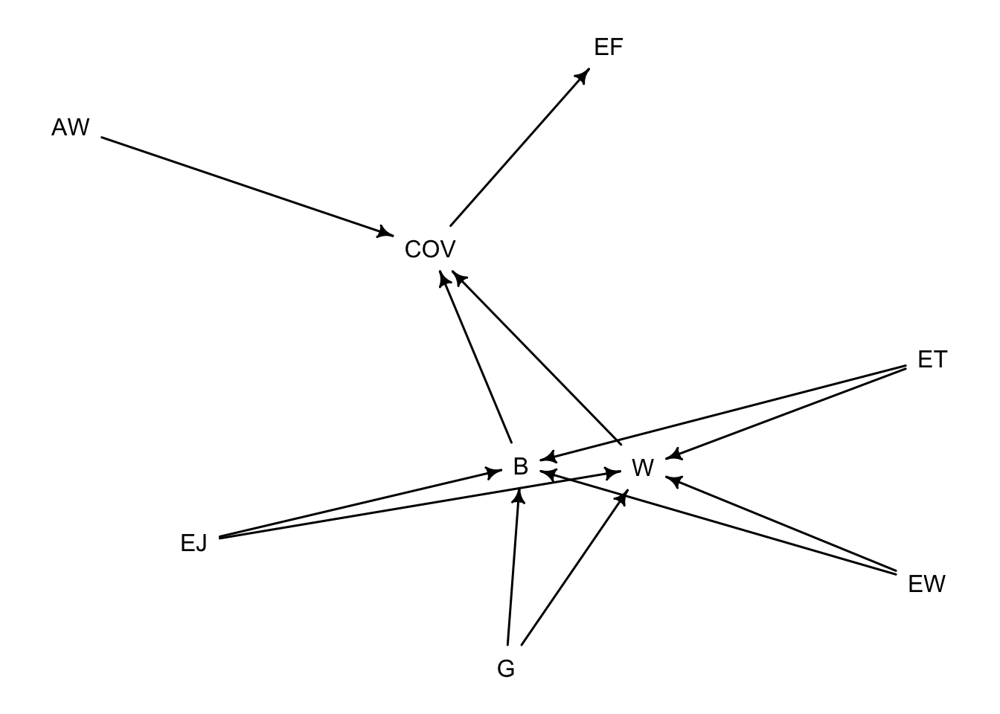

Gamification BDA
Introduction
Software testing is an integral part of software development. Developers incorporate tests from low-level unit tests to high-level system tests and GUI-based tests. GUI-based tests can verify a system’s behavior through interactions with its GUI the same way a user would. One approach to increase the engagement and motivation of people performing a task is Gamification, where elements originated in games are applied in a non-gaming context. In the context of exploratory GUI-based testing, Gamification could improve testers’ engagement and therefore improve the outcome of test activities.
Coppola et al. [1] conducted an experiment with 144 participants to investigate how Gamification would impact the effectiveness and efficiency of exploratory GUI testing.
In this project, I perform a (re-)analysis of the impacts of Gamification for exploratory GUI testing using Bayesian Data Analysis (BDA). Input for this analysis is the replication package from the experiment [1].
Directed Acyclic Graph (DAG)
A DAG helps us to understand the relationships between the different variables visually.
- G: Gamification approach was used; value = {true, false}
- EJ: Experience in Java; value = {“<1 year”, “1-3 years”, “>3 years”}
- EW: Experience in web development; value = {“<1 year”, “1-3 years”, “>3 years”}
- ET: Experience in software testing; value = {“<1 year”, “1-3 years”, “>3 years”}
- W: Inspected widgets
- B: Identified bugs
- COV: Test coverage
- EF: Effectiveness of exploratory testing
- AW: Average number of widgets on a page
Assumptions:
- G -> W: Using Gamification encourage testers to inspect more widgets
- G -> B: Using Gamification encourage testers to identify more bugs
- EJ -> W: Experience in the used programming language will improve the inspection rate of widgets
- EJ -> B: Experience in the used programming will identify more bugs
- EW -> W: Experience in the technology of the SUT improves the inspection rate of widgets
- EW -> B: Experience in the technology of the SUT improves the identification of bugs
- ET -> W: Experience in software testing improves the inspection rate of widgets
- ET -> B: Experience in software testing improves the identification of bugs
- W -> COV: More inspected widgets increase the test coverage
- B -> COV: More identified bugs increase the test coverage
- AW -> COV: Average number of widgets on a page influence the test coverage of exploratory tests
- COV -> EF: More test coverage improves the effectiveness of exploratory tests
Building blocks
A causal DAG is always built using one or more of the four types of relations: Fork, Pipe, Collider, and Descendant.
Fork: In a fork relationship, a variable (G) is the cause of B and W, e.g., B <- G -> W. Here B and W stay independent
Pipe: In a pipe, variables influence the next element in the pipe, e.g., B -> COV -> EF. B influences COV, which influences EF. Conditioning on COV would block the information flow between B and EF.
Collider: In this DAG, an example of a collider is the EJ -> W <- EW. A relationship between EF and WE only appears if you condition on W; otherwise, there will be no association between EJ and WE.
Descendent: The DAG consists of multiple descendent relationships, e.g., AW -> COV <- B; COV -> EF. A descendent (EF) is influenced by another variable (COV).
[[1]]
dag {
AW
B
COV
EF
EJ
ET
EW
G
W
AW -> COV
B -> COV
COV -> EF
EJ -> B
EJ -> W
ET -> B
ET -> W
EW -> B
EW -> W
G -> B
G -> W
W -> COV
}AW _||_ B
AW _||_ EF | COV
AW _||_ EJ
AW _||_ ET
AW _||_ EW
AW _||_ G
AW _||_ W
B _||_ EF | COV
B _||_ W | EJ, ET, EW, G
COV _||_ EJ | B, W
COV _||_ ET | B, W
COV _||_ EW | B, W
COV _||_ G | B, W
EF _||_ EJ | B, W
EF _||_ EJ | COV
EF _||_ ET | B, W
EF _||_ ET | COV
EF _||_ EW | B, W
EF _||_ EW | COV
EF _||_ G | B, W
EF _||_ G | COV
EF _||_ W | COV
EJ _||_ ET
EJ _||_ EW
EJ _||_ G
ET _||_ EW
ET _||_ G
EW _||_ GReferences
[1] Coppola, R., Fulcini, T., Ardito, L., Torchiano, M. & Alégroth, E., Gamification: the next Silver Bullet for Exploratory GUI Testing? (in revision)
[2] McElreath, R. (2020). Statistical rethinking: A Bayesian course with examples in R and Stan.